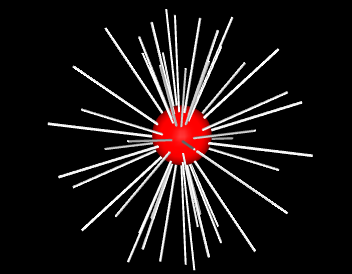

阅读对一个人最深广的魅力
大约在钱小能上一年级的时候，因他的班主任吴老师推荐，我读到这么一本书——《朗读手册》。这是一个叫吉姆·崔利斯的美国人写的，他是著名的阅读研究专家。
《朗读手册》序言里有这么一段话：
“1. 你读得越多，知道得越多。
2. 你知道得越多，你越聪明。
3. 你越聪明，在校学习的时间越长。
4. 你在校时间越长，获得的文凭越多，受雇工作的时间越长——你一辈子赚 的钱就越多。
5. 你的文凭越多，你的孩子在学校的成绩就越高。
6. 你的文凭越多，你的寿命越长。”
看了一遍，没忍住笑了，显然，这些所谓的定律看起来十分功利，但细究起来，里面有内在的逻辑，一层一层地推理开去，就会发现，阅读的确是消灭无知、贫穷和绝望的终极武器，是打开人生希望之门的金钥匙。
然而，作为一个阅读经验丰富的人，发现阅读还有更为深广的魅力，简单归纳，至少应该有三层：
1.以最低级的代价获取最为高级的享受
我们发现，上帝垂爱世人，人类的很多极为简单的活动都能达到身心愉悦，不止阅读，比如，聊天，散步，钓鱼、打牌、刺绣、烹调、劳动，跑步。
但我们的思维再微微前进一小步，又会发现，钓鱼、打牌等活动带给人的乐趣是临时的，短暂的，表浅的，它不会渗透沉淀在心灵深处，一旦这种活动停止，乐趣也会紧跟着停止。而阅读不同，阅读的形式是心灵与心灵的接触和融合，它带给我们的乐趣是深层的，就算它停下来，这种乐趣就像在心灵里生了根，发了芽，不但会自我生长，还会自动嫁接，并且会波及到身体四肢。
难道不是吗？越是依靠思想获得的乐趣，身心愉悦就越是持久，深远，高级。
有个爱读书的人说：上有天堂，下有书房。
我觉得他一定找到了阅读的独特乐趣。
其实，只要喜欢阅读，连书房都不需要有。
酷暑之日，屋外的蝉鸣躁若流火，只需要好书一本，坐在窗前的地板上，沉浸下去，渐渐会觉置身嘉木浓荫之中，遍体生凉，噪声渐远。
哪怕最为寒冷的冬天，不需要围炉而坐，也不需要壁炉里火光熊熊，只需要有个温暖一点的被窝，拥书而坐，凭它屋外北风呼号，迷离于书的世界中，恨不得就这样地老天荒。
至于春和景明、橙黄橘绿的好时节，还用说吗，读书自然得意，也可以把书一抛，出门去看人间好颜色。
更何况，读诗令人思怀隽永，小说令人牵肠挂肚，散文令人淡泊悠远。趣味不同，享受不一。
尤其是，你刚读完一首好诗，一篇好文，一部好小说，正激动得一跃而起，在家里的橡木地板上来回踱步，忽有知心好友在楼下按门铃，开门延入，你可以与之持茶对酒，或肆意臧否书中人物，其痛快淋漓之味，岂非人间至乐？
读书不仅淬炼着人的精神，也熏染着人的容颜。那是一个潜移默化的过程。
我喜欢凝视那些读书人的眼睛，女人沉静优雅，男人深邃豁达。
在一簇男女之间，我能一眼辨认出哪位是读书人，或者哪位喜欢读书，因为他们的眉梢眼底流露出那种淡然物外的脱俗气质。
正因为深深体会到阅读带来的深刻乐趣，才常常为那些不喜欢阅读的人感到遗憾，并千方百计地让自己的孩子爱上阅读。
2.阅读促进精神的强大与完整
当我们端详一个孩子的时候，我们会发现他的眼睛非常单纯，像纯洁的山泉。
当我们端详一个哲学家、一个诗人或作家的时候，哪怕他们的照片，我们会发现，他们的眼睛像一泓深潭，蕴藏着无限的深意，既让人琢磨不透，又令人无限留恋，想去了解他，探索他，泰戈尔，托尔斯泰，屠格涅夫，鲁迅，木心……多不胜数。
他们的眼睛是如何由单纯变得澄澈而深邃的，因为阅读和思考一天天涵养着他们的灵魂。
一个被阅读涵养的灵魂到底能有多强大呢？我们先看看木心吧。
出身于书香门第的木心是一个自幼把读书习惯浸入骨髓的人。
考察一个人像不像个读书人，不能看他的顺境，要看他身临逆境时的态度。
木心上世纪六十年代被当权者囚禁的时候，住在阴暗潮湿的防空洞改造成的监狱。在污浊的脏水里，每天吃酸馒头和霉咸菜，白天操作机器，从事各种枯燥无味的劳动。可到夜晚来临，木心的思考却格外活跃，用造反派给他写自白的纸，写下自己的所思所想。到出狱的时候，他密密麻麻、工工整整地写满了66张纸的正反面，足有65万字，这些字成为他个人和社会的珍贵财富。
你看，一个真正的读书人，无论处于何种境地，他多年积累的学识、思考、素养、才情会继续裂变、发酵，酿成一潭醇厚的思想美酒，一种坦然自若、志向高洁的精神气质，向四周发散，没有怨言，没有愤怒，没有戾气，是发自内心的诗意和审美，优雅和高贵。
如今，我们读着他优美、简约、深刻的文字，依旧感慨万分。
当然不是每一个读书人都能活成他那样高贵的精神气质，但起码，木心让我们看见了可能。
前几天，我在一篇文章里，看到浙大前副校长、教育家、工控技术科学家褚健先生被诬陷判刑入狱的片段。
在被陷害入狱的三年中，他不愿意被时代落下，千方百计搞到相关专业书籍，在监狱里夜以继日学习新知识。他还帮助狱友，给狱中的小孩上课，教成人出去以后如何创业。
在监狱里，他的所作所为让大家十分尊敬。他的学识和操守，最终为自己筑起一个避难所。
古今中外，此类不胜多矣。
所以，阅读不仅可以促进人生幸福，更重要的是，那些通过阅读获得高级精神生活的人，不管到了多么糟糕的境地，寂寞和荒凉都伤害不了他，他依然可以在深渊里仰望星空。他的心灵永远充实，他通过肥厚的精神土壤进行思想的再创造，于荒漠中建成绿洲，创造出令人欣喜的葱茏。
3.阅读，让人生截然不同
或许，仍旧有极少数人鄙视阅读的意义，他认为，有的人终身不读一页书，这一生也一样过得饱满而充实。
我没见过这样的人，但我看见过农村很多“睁眼瞎”的老人。
在我老家的村庄里，大多数人在年老的时候，当劳动的能力消失之后，他们吃饱了饭，凑到一起，说完张家常李家短，电视看了再看之后，就再也没有消遣了，然后睁着眼，看着太阳从东边出来，升到南边的天上，一寸一寸地往西移动，又寂寞地落到山后，眼睛里一片茫然。生命一天天消耗下去，直到寿终正寝。
一个热爱阅读的人，一个满腹经纶的人不是这样生活的，即使到了老年，身体衰微了，他的思想之树依然成长，依然年轻。
偶尔，读到白岩松的一席话：“阅读就是在你的生命春天里不断地去播种。然后让你的这棵大树，这个木越长越郁郁葱葱。”
这个比喻很形象，因为阅读使你得到的知识和感悟系统化，呈现一个生长的态势，使人的思想和学识之树枝繁叶茂。
正如叔本华所认识的，“被赋予了高度精神力量的人，过着思想丰富、多姿多彩、充满了生命活力和意义的人生，其自身就承载着最高尚的乐趣之源。”
阅读的人，正是被赋予了高度精神力量的人。
阅读让我们能拥有一双眼睛，一双真正睁开的眼睛，一双懂得凝视世界的眼睛。阅读的人生比不阅读的人生不知道要深广多少倍。不阅读的人，就算你人生经验丰富，你走了一万里路，而阅读的人，等于比你多活了十世、百世，多走了千万里路。
如果你觉得这些理由过于飘渺和抽象，我想说一点儿更现实的：阅读是一种心灵行为，阅读的过程，就是跟一个伟大的心灵和宽广的世界对话的过程，在这个过程中，我们的心灵得到滋润、融化和调适，我们的行为会随之改变，周遭的世态人情会因为我们的行为而不同，它会变得开阔、丰富、美丽和多情。最低限度来说，阅读总能让我们从书中得到勇气、向往、希望和力量，来抵御世间的嘈杂和暄嚣，引导内心的平静和自足。
总而言之，不管你学历多高，也不管你拥有多少财富，更不管你走了一万里路，没有阅读的人生总是缺乏一脉诗意和涵咏，一种丰润和饱满，一种辽阔与深邃。
